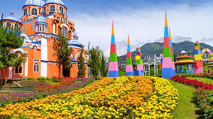
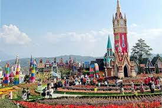

Sejarah Celosia
Celosia adalah taman bunga yang terletak di Bandungan, Jawa Tengah. Tempat ini dikenal dengan berbagai jenis bunga yang ditanam secara artistik, menciptakan pemandangan yang memukau bagi pengunjung. Celosia menawarkan suasana yang damai dan indah, ideal untuk berfoto dan menikmati keindahan alam.

Daya Tarik Utama
Taman Celosia menawarkan berbagai jenis bunga dengan warna-warni yang cerah dan desain taman yang unik. Pengunjung dapat menikmati pemandangan bunga yang indah serta area foto yang Instagramable. Tempat ini juga menyediakan fasilitas untuk bersantai dan menikmati teh atau kopi sambil menikmati pemandangan.
Aktivitas Wisata
Di Celosia, Anda bisa berkeliling menikmati keindahan taman bunga, berfoto dengan latar belakang bunga-bunga yang indah, serta menikmati berbagai fasilitas yang tersedia seperti kafe dan area istirahat. Taman ini juga sering mengadakan acara dan festival bunga yang menarik.
